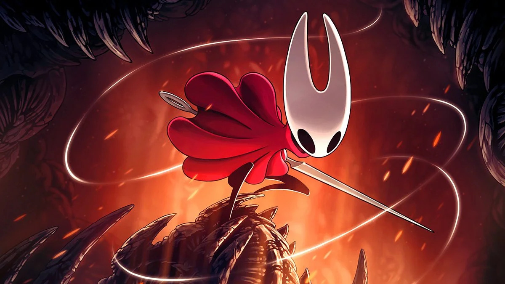

Clair Obscur

Description: Clair Obscur Expedition 33 is a critically accllaimed rpg (role-playing game) with strong storytelling and performance, with slick production and next gen graphics. It's developed by a small gaming development team at Sandfall Interatcive.
- Strength: Compared to the price of triple AAA games at $70, this game is only $49.99 without microtransactions.
- Weakness: While this game is talked about in the gaming community, after a few months the hype for it will die down.
Hollow Knight Silksong
Description: Hollow Knight Silksong is a sequel to the award winning Hollow Knight, featuring 2D metroidvania platformer with Souls-like elements. As Hornet, adventure through a kingdom ruled by silk and song adventuring through an unfamiliar world, fighting mighty enemies and solving ancient riddles as you ascend to the kingdom's peak.
- Strength: For $20 this game has beaten most triple games in sales crashing steam servers on release
- Weakness: Hollow Knight Silksong is a very hard game. Many players have stopped playing out of rage for the enemy damage.
Hades 2

Description: Hades 2 is a sequel from Supergiant Games building off the aspects from the rogue-like dungeon crawling from the first game with new, action-packed, replayable experience rooted in the Underworld of Greek myth and its connections to witchcraft. Playing as the immortal Princess of the Underworld, players will explore a larger, deeper mythic world, vanquishing the forces of the Titan of Time with Olympian powers, in a story that continually unfolds through every setback and accomplishment.
- Strength: Hades 2 is one of the highly rated games this year after its latest update. Refining combat and story progression.
- Weakness: Simliar to Hollow Knight Silksong, the game is very challenging.